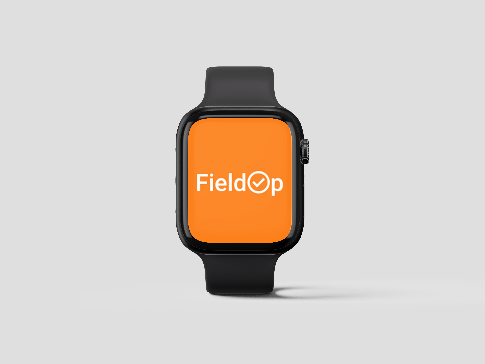

FieldOp

Challenge
Farmers struggle to verify the authenticity of bio-pesticides and calculate precise chemical dosages in a market flooded with counterfeit products. For active farmers, this lack of transparency leads to frequent over-spraying. This guesswork inflates operational costs, damages crop health, and causes severe environmental harm. The design challenge lies in building a seamless, cross-device experience that provides instant product verification and actionable data directly in the field.
Context
I designed a multi-platform crop protection ecosystem across mobile and smartwatch devices to ensure safe, sustainable farming:
- Mobile App (The Research Hub): Allows farmers to instantly scan product barcodes to verify authenticity, check quality, and find suitable biochemical solutions.
- Apple Watch App (The Field Assistant): Provides glanceable, hands-free utility on the move, delivering real-time dosage calculations, spray schedules, and critical warnings directly to the wrist.


